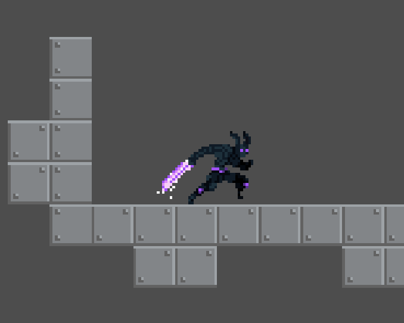
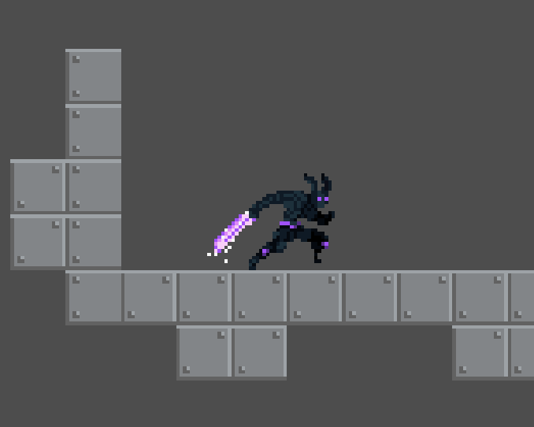

GameJam spel gjort under 24 timmar. Gjord i Godot, exporterad till Html5 Spela här.
GameJam spel gjort under 24 timmar. Gjord i Godot, exporterad till Html5 Spela här.

Detta har jag lagt delar av min fritid på det senaste åren. Ett turnbased-isch fighting hybrid spel.
Spelet skrivs i Godot vilket är en spelmotor man kodar ett Python liknande språk i.
Ett grupp-projekt jag jobbade med under studierna.
Detta är ett enspelar spel av adventure genren skrivet i Unity/C#.
Till detta spel gjorde vi även en trailer.
Ännu ett projekt jag jobbade med på fritiden. En egen tolkning av spelet Asteroids.
Skrivet i C# Monogame, för platformen Android med hjälp av biblioteket Xamarin.
Detta är ett grupp-projekt jag jobbade med under studierna på Liu.
Ett två spelar fighting spel i 2D skrivet i C++ med SFML biblioteket.
Till detta spel gjorde vi även en trailer och en egen hemsida.
Detta är ett grupp-projekt jag jobbade med under studierna på Liu.
Det är egen tolkning av spelet Worms skrivet i C++ med SFML biblioteket.
Det första fritidsprojekt jag någonsin jobbat med.
Jag jobbade på detta i mellanstadiet. Skrivet i GameMaker8.1.